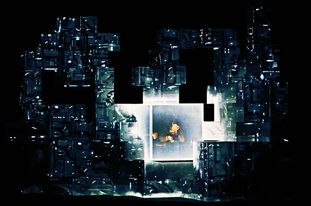

Amon Tobin celebrates 15 years with 'bolt-fastened' box set


Anyone who’s witnessed his stunning ISAM live show in Australia in recent weeks will know, Amon Tobin certainly doesn’t do anything by halves. For the serious fans among us, Ninja Tunes are giving you the opportunity to show how devoted you truly are. They’re releasing an anthology set for the heavy-duty price of approximately $AUS170.
While the pricing might seem a bit steep, you certainly get bang for your buck: the Amon Tobin boxset is strictly limited to only 4,000 runs worldwide, and comes in what’s described as a “beautiful high quality bolt fastened mechanical press”. Inside the hefty packaging you’ll find seven CDs, six pieces of vinyl, two DVDs and several posters.
According to Ninja Tune, almost none of the music has been released on a physical format before, and includes brand new compositions as well as a comprehensive range of the pioneering producer’s material that includes “unreleased dub plates… a wealth of archive material, Amon Tobin’s earliest audio experiments… film and television score work, unreleased score work, deleted bootlegs, ISAM live show DVD, ISAM live audio album, remixes, cover versions and re-interpretations of the ISAM album, remixes Amon has produced for others, a recording of the Royal Albert Hall orchestrations…” And so on.
Amon Tobin told Wired this week that the reflection on the wealth of excellence from his 15 year career comes at a time when the possibilities of the future seem endless.
“There’s never been a more interesting time to play with sound,” Tobin said. “The limitations for what’s possible become smaller all the time as technology evolves, giving us more resolve to push further and fewer excuses to lazily repeat ourselves. We’re at a point where powerful, affordable tools are widely available and our own creativity is what’s really put to the test.”